CYD Home Solar Monitor
Handbook for firmware 0.7.0-dev: installing, configuring, and reading the 2.8-inch ESP32-2432S028R (CYD) home energy display. The panel shows solar, house, grid and battery power for a SolarEdge inverter and battery, read from Home Assistant through the SolarEdge Modbus Multi integration. It was built on a SolarEdge SE6000 with an LG 9.8 kWh battery.
Source: github.com/anthonyjclarke/CYD-Home_Solar_Monitor · Installer: anthonyjclarke.github.io/CYD-Home_Solar_Monitor
Overview
The monitor never talks to the inverter. Home Assistant keeps its existing SolarEdge Modbus Multi connection, and the CYD reads selected sensor states from Home Assistant's local REST API every few seconds. Weather comes from Open-Meteo for a location you choose.
Six Home Assistant entities are read every cycle: inverter AC power, household power, the signed grid meter, signed battery DC power, battery state of energy and inverter DC power. Solar generation is calculated from inverter DC and battery power. Two optional kWh entities (today's solar energy and tomorrow's solar forecast) are read once a minute.
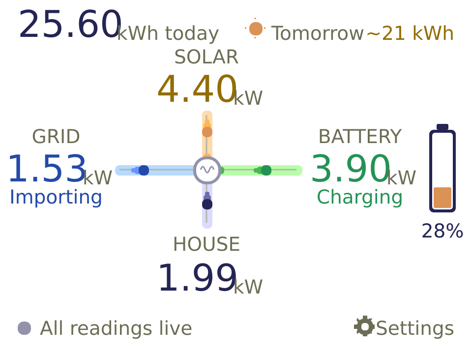
What you need
Energy system
| Item | Requirement |
|---|---|
| Inverter | A SolarEdge inverter with Modbus TCP, such as the HD-Wave SE6000 used here. One inverter is assumed (i1 entities). |
| Battery | A battery on that inverter (LG RESU, SolarEdge Home Battery) reporting DC power and state of energy (b1 entities). Without one, the battery readings stay "No data" and the status line never reads live. |
| Grid meter | A SolarEdge energy meter at the grid connection (m1 entities), giving signed import/export power. |
| Modbus TCP | Turned on in the inverter: in SetApp, Site Communication → Modbus TCP (default port 1502). Your installer may need to do this. The inverter accepts one Modbus client at a time. Home Assistant is that client, which is why the CYD reads Home Assistant and never the inverter. |
Home Assistant
| Item | Requirement |
|---|---|
| Home Assistant | Any installation on the same network as the CYD, reachable over HTTP (or HTTPS with its CA certificate). |
| SolarEdge Modbus Multi | Installed from HACS and connected to the inverter: WillCodeForCats/solaredge-modbus-multi. In its options, turn on Detect meters and Detect batteries. It provides five of the six required entities. The built-in cloud SolarEdge integration is not enough: it updates every 15 minutes and has no battery power. |
| House power sensor | A template sensor for household demand (see Home Assistant setup). Modbus Multi doesn't provide one. |
| Access token | A long-lived access token from your Home Assistant user profile. |
| Optional | A daily solar energy sensor, and Forecast.Solar or Solcast for tomorrow's forecast. |
Hardware
| Item | Notes |
|---|---|
| ESP32-2432S028R ("Cheap Yellow Display", CYD) | The 2.8″ 320×240 ILI9341 board with resistive touch and a single micro-USB port. Widely sold for about US$10–15; the CYD community repository describes the board and where to buy it. Some newer boards have two USB ports (USB-C and micro-USB) and a different display controller; they are untested with this firmware. |
| USB data cable | Micro-USB. A charge-only cable powers the board but the installer can't see it. |
| USB power supply | Any 5 V, 1 A or better phone charger, for running the panel permanently. |
| Computer for installing | Desktop Chrome or Edge, for the browser installer. Windows may need the board's USB-serial driver (CH340 or CP2102, depending on the board). |
| Wi-Fi | A 2.4 GHz network. The ESP32 can't join 5 GHz-only networks. |
| Case (optional) | The bare board works on a stand; the CYD community repository links printable cases. |
No soldering or extra wiring is needed. The board's RGB LED, SD slot and spare pins are unused.
Install and flash
From the browser (recommended)
Open anthonyjclarke.github.io/CYD-Home_Solar_Monitor in desktop Chrome or Edge, plug the CYD in with a USB data cable, choose the board and click Connect.
- New board: choose Install and agree to erase, then use Configure Wi-Fi to send your network over USB.
- Board already running this firmware: the page offers Update, which keeps Wi-Fi, settings, the token and touch calibration.
Each release also carries *-firmware.bin for the device page's Firmware update, and *-merged.bin for a clean USB install, which erases everything.
From PlatformIO
Open the project folder in PlatformIO; the only environment is cyd28. A build produces:
| File | Use |
|---|---|
.pio/build/cyd28/firmware.bin | App image: USB updates, browser Firmware update, ArduinoOTA. Keeps all settings. |
.pio/build/cyd28/firmware-merged.bin | Clean USB install from address 0x0. Erases Wi-Fi, settings, token, device code and touch calibration. |
.pio/build/cyd28/flash_parts.json | Map used by the shared browser installer. |
pio run -t upload --upload-port /dev/cu.usbserial-10 pio device monitor -b 115200 --port /dev/cu.usbserial-10
Run these from the project folder, or add -d <project path>. Over the network, upload firmware.bin from the browser page, or use ArduinoOTA at solar.local on port 3232 with the device code (shown on the panel's setup page) as the password.
First setup
- Wi-Fi. Power the CYD. If it has no working Wi-Fi after 20 seconds it opens a hotspot named
CYD-Solar-xxxx. Its password is the 12-character device code shown on the panel. Join it, open the captive portal (or192.168.4.1), and choose your network. The portal times out after three minutes and reopens after bounded retries. When installing from the browser installer, Wi-Fi can instead be sent over USB (Improv-Serial). - Open the device page. Browse to http://solar.local/. If your device can't resolve
.localnames (some older Android phones), tap the panel to see its IP address and use that. There is no login. - Connect Home Assistant. Under Settings → Home Assistant, check the Home Assistant URL (default
http://192.168.1.254:8123), paste a long-lived access token, and save. The default entity IDs are SolarEdge Modbus Multi's, plus the house sensor you create (see Home Assistant setup). - Optional extras. Set the daily solar and forecast entities, search for your location to enable weather and set the timezone, choose a panel layout, and adjust night dimming.
- Check. Readings appear after the next cycle. To preview the screen without Home Assistant, tick Demo mode; untick it when commissioning.
Home Assistant setup
Access token
In Home Assistant, open your user profile, then Security → Long-lived access tokens → Create token. Paste it into the device page only. The device never shows it again, never logs it, and leaving the field blank on later saves keeps the saved token; tick Clear saved Home Assistant token to remove it. The firmware only reads states, but a token is not limited to reads by Home Assistant itself.
Power entities (required)
| Reading | Default entity | Units and sign |
|---|---|---|
| Inverter AC | sensor.solaredge_i1_ac_power | W/kW; diagnostic only, never used for solar |
| Household | sensor.home_power_usage | W/kW; must not be negative |
| Grid | sensor.solaredge_i1_m1_ac_power | W/kW; + export, − import |
| Battery | sensor.solaredge_i1_b1_dc_power | W/kW; + charge, − discharge |
| Battery level | sensor.solaredge_i1_b1_state_of_energy | % (0–100) |
| Inverter DC | sensor.solaredge_i1_dc_power | W/kW (Watt/Watts also accepted) |
All except Household come from SolarEdge Modbus Multi with its default names. If your entity IDs differ (for example a second inverter, or a renamed device), enter yours under Settings → Entities.
House power sensor (required)
Household demand is inverter AC output plus whatever the grid supplies. With the meter's export-positive sign, that is inverter AC minus meter power. Create it under Settings → Devices & services → Helpers → Create helper → Template → Template a sensor, with unit W, device class Power and state class Measurement:
{{ [0, states('sensor.solaredge_i1_ac_power') | float(0)
- states('sensor.solaredge_i1_m1_ac_power') | float(0)] | max }}
Name it so its entity ID is sensor.home_power_usage, or enter whatever ID it gets under Household. The Modbus Multi template-sensor wiki has this and the other templates used below.
Daily solar energy (optional)
The top-left "kWh today" figure needs a solar energy sensor that resets at midnight. With a battery, don't use the inverter's AC energy (sensor.solaredge_i1_ac_energy_kwh): it counts battery discharge as production and misses solar that went into the battery. Build true solar energy instead, with the same formula the panel uses for SOLAR. All three helpers are under Settings → Devices & services → Helpers → Create helper:
- Template → Template a sensor, "Solar production power": unit
W, device class Power, state class Measurement.{{ [0, states('sensor.solaredge_i1_dc_power') | float(0) + states('sensor.solaredge_i1_b1_dc_power') | float(0)] | max }} - Integral sensor (Riemann sum) of that sensor: method Left, metric prefix k, time unit Hours. This is lifetime solar kWh, and also the right Solar production source for the Energy dashboard.
- Utility Meter on the integral sensor, with a Daily reset cycle, for example
sensor.solar_energy_today.
Enter the utility meter's entity ID in Solar energy today. It counts from when it is created, so the first day reads low. If your Energy dashboard already uses a sensor built this way, a daily utility meter on it is all you need.
Solar forecast (optional)
Install the Forecast.Solar or Solcast integration and enter its "tomorrow" energy sensor in Solar forecast tomorrow. With Forecast.Solar this is usually sensor.energy_production_tomorrow; check the actual ID in Home Assistant. Without it, the panel shows tomorrow's maximum temperature instead.
Boot screen
At power-on the panel shows a start-up screen in the theme of the chosen layout. Each row fills in as that step completes; a green dot means done, amber means waiting, red needs attention.
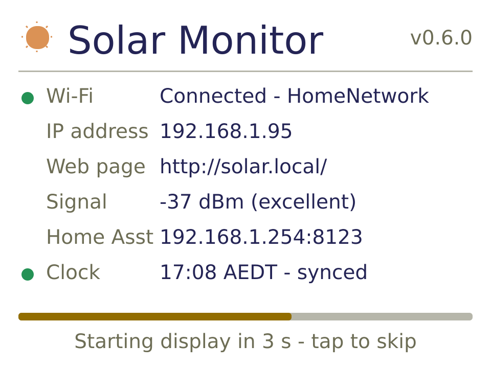
| Row | Shows |
|---|---|
| Wi-Fi | Connected - network name; Connecting...; or, in red, the setup hotspot name when no network is saved. |
| IP address | The address the router gave the CYD. |
| Web page | http://solar.local/ |
| Signal | Wi-Fi strength in dBm: excellent (≥ −55), good (≥ −67), fair (≥ −75) or weak. |
| Home Asst | Home Assistant host and port; red no token if none is saved; demo mode in demo. |
| Clock | Local time once synchronised, or waiting for time server. |
The bar along the bottom shows how long the screen stays up. It closes 6 seconds after Wi-Fi connects, so the IP address can be read, or after 15 seconds if Wi-Fi hasn't connected (the panel then shows the Wi-Fi setup page). A tap closes it at once. Readings are fetched in the background meanwhile, so the energy display is usually live as soon as it appears. Both times are APP_BOOT_HOLD_MS and APP_BOOT_MAX_MS in include/config.h.
The display
The centre-flow layout puts the four power flows on arms meeting at a central dot, the inverter: solar above, house below, grid to the left and battery to the right. Each power figure is shown as a positive number, in watts below 1 kW and kW to two decimals above.
Arrows. Chevrons march along an arm in the direction power is flowing, in that reading's colour, while it is above 30 W. Solar always flows in and the house always flows out; grid arrows point in when importing and out when exporting; battery arrows point out when charging and in when the battery is supplying the house. Below 30 W, or when a reading isn't live, only a faint grey track is left.
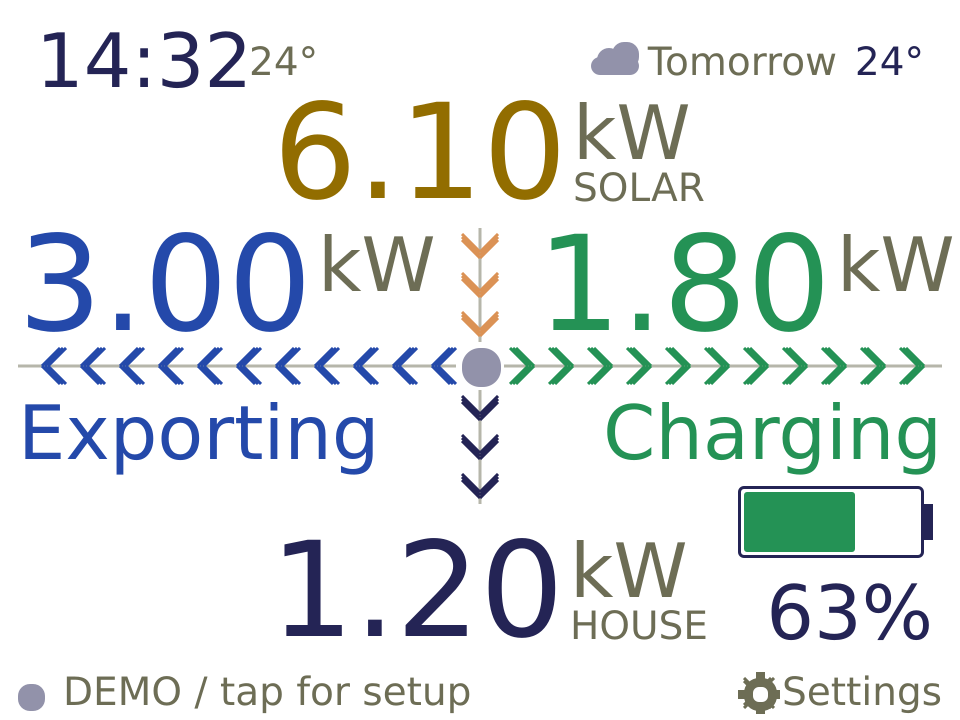
1 2 3 4 5 6 7 8 9- Clock and current temperature. The temperature appears once a location is set. With the optional Solar energy today entity, today's solar kWh replaces both (see below).
- Tomorrow: a weather icon and tomorrow's maximum temperature, or the solar forecast (
~21 kWh) when a forecast entity is set. ShowsOFFLINEwhen Wi-Fi is down and there is nothing to show here. - Solar generation: inverter DC power less any battery discharge, never below zero.
- Grid power, with Importing, Exporting, Idle (within ±30 W) or No data beneath.
- Battery power, with Charging, Supplying (covering what the house needs), Idle or No data beneath.
- Battery gauge: filled to the state of energy, with the percentage beside it. Green at 50% and above, amber from 20%, red below 20%. It is the charge level, not a share of the house load.
- House demand, from the household entity.
- Status line. A green dot and Good time to use power when every reading is live and you are exporting more than 100 W, or charging above 100 W with the battery at 95% or more. Otherwise All readings live, or the reason readings are missing (see states).
- Settings: a reminder that tapping the screen opens the device setup page.
1.53 means "last known", not "now".Display states
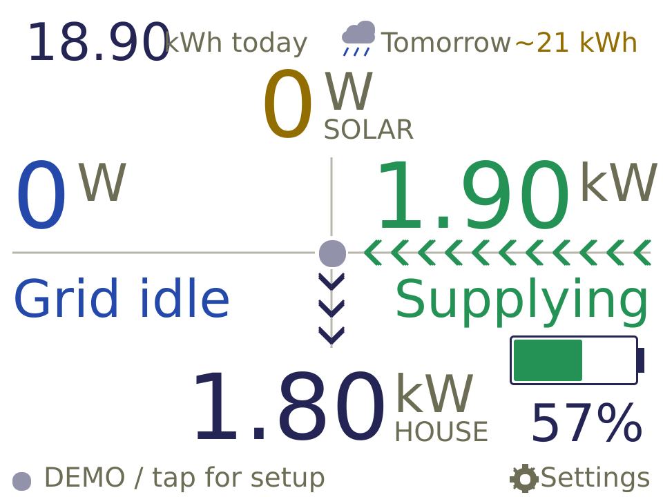
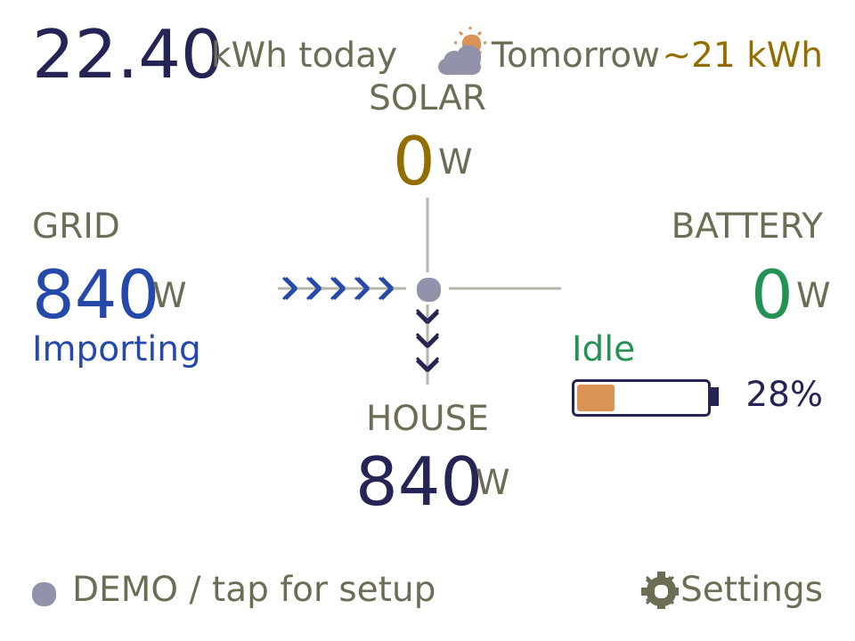
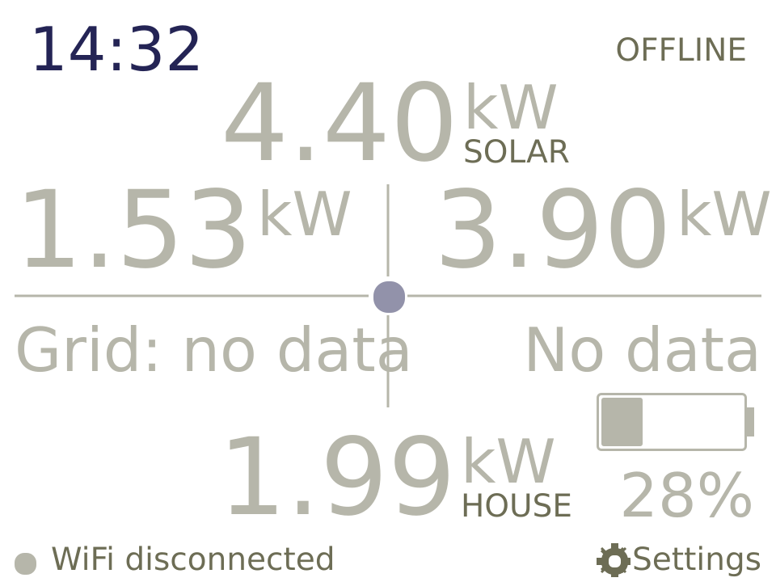
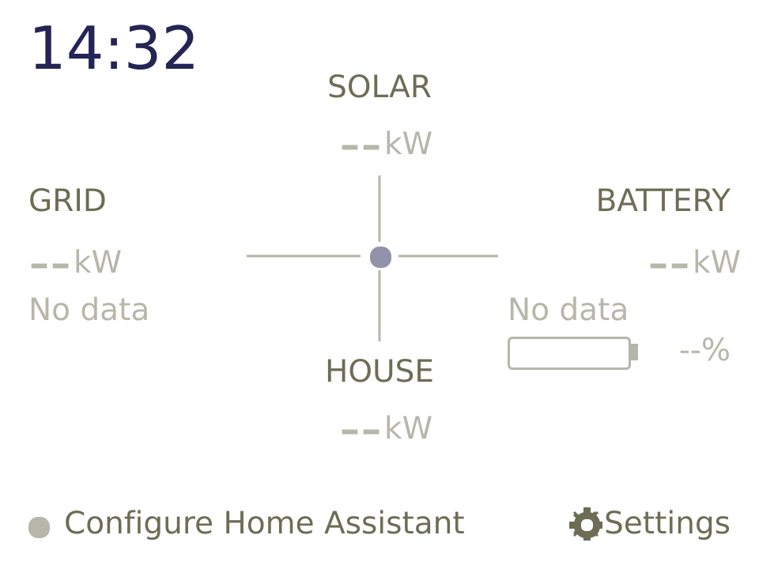
--. The browser's Device status panel says Configure Home Assistant token.Status line messages
| Message | Meaning |
|---|---|
| Good time to use power | All readings live, and exporting > 100 W or charging > 100 W at ≥ 95% battery. |
| All readings live | Everything is current. |
| Live / tap for device settings | (Cards layout) everything is current. |
| HA connected / source age unknown | Readings arrive, but Home Assistant gave no report time or the clock isn't set yet. |
| Waiting / stale or unavailable | At least one displayed reading is missing, invalid or too old. |
| WiFi disconnected | The CYD has lost Wi-Fi; it reconnects on its own. |
| DEMO / tap for setup | Demo mode is on; values are synthetic. |
Weather icons
Icons are drawn from Open-Meteo's WMO weather codes: clear (sun), partly cloudy (sun behind cloud), cloudy, fog (horizontal bars), drizzle (cloud with dots), rain (cloud with slanted lines), snow (cloud with flakes) and storm (cloud with lightning).
Choosing a layout
The panel has two layouts showing the same readings. Choose one in the browser under Settings → Display → Layout and click Save settings; the panel switches straight away, and the boot screen follows the same theme.
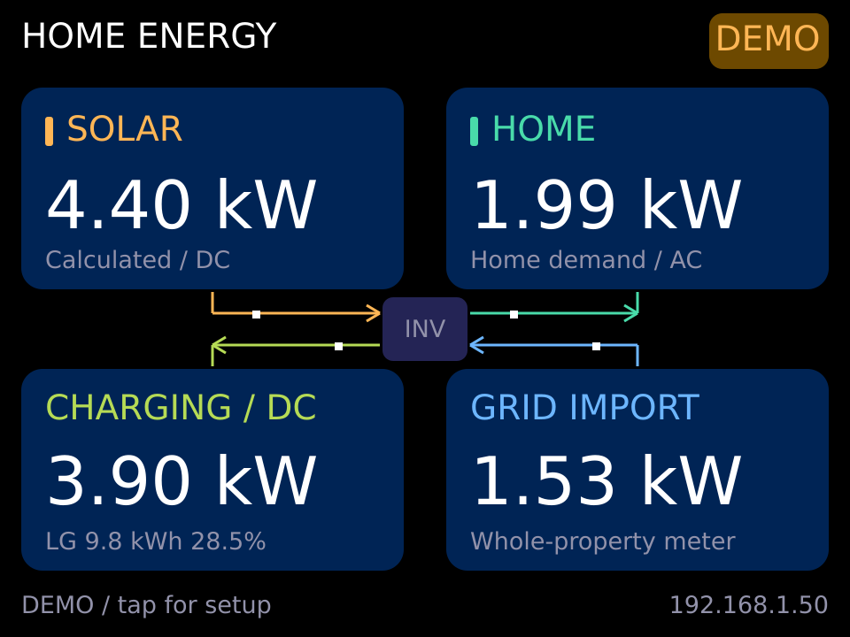
On the cards layout, the badge reads HA when all readings are live, WAIT when some are not, OFFLINE without Wi-Fi and DEMO in demo mode. The battery card shows the battery label, percentage and a small gauge along its bottom line.
Touch, setup page and dimming
| Action | Result |
|---|---|
| Short tap (anywhere) | Opens the device setup page; tap again to return. |
| Hold 2 s on the setup page | Starts touch calibration: release, then tap each of four crosses once. Saved to the device; a 45-second pause cancels. |
| Tap while dimmed at night | Only wakes the screen to full brightness for a minute; it doesn't also open the setup page. |
The setup page shows http://solar.local/, the IP address, the device code (the OTA and setup-hotspot password), the Home Assistant URL and the firmware version. Without Wi-Fi it shows the hotspot name and password instead.
Night dimming runs from Night starts to Night ends (default 19:00–07:00) in the configured timezone, once the clock has synchronised. After a minute without touch the backlight drops to a fifth of the configured brightness.
Browser dashboard
Open http://solar.local/ from any device on the home network. The page follows your system's light or dark setting and refreshes every three seconds. The sidebar groups the sections: Live (Dashboard), Settings (Home Assistant, Display, Location & weather, Entities) and Device (Device & firmware, Diagnostics) and Help, which opens this handbook from the device itself at http://solar.local/guide/, so it works without internet. A banner at the foot of the dashboard links to this project on GitHub. Beneath the sidebar, the Device status panel shows a status light (green live, amber waiting or demo, red disconnected) with the address, firmware, uptime, free memory and the source message.
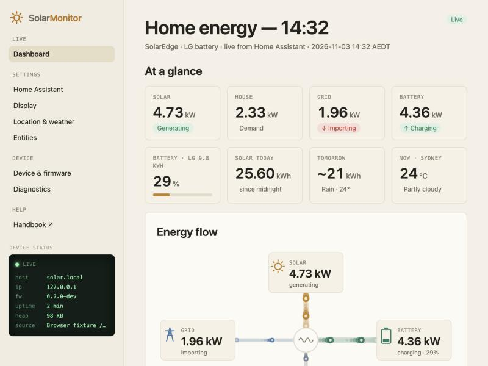
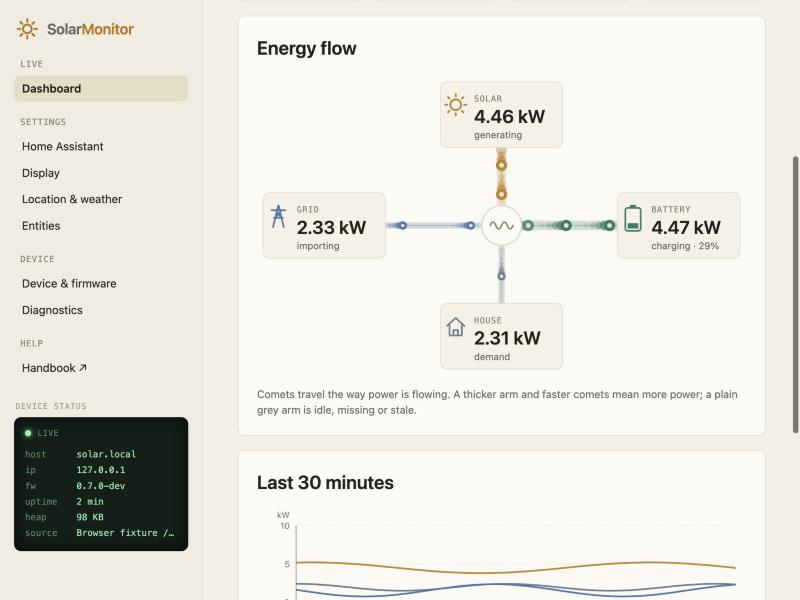
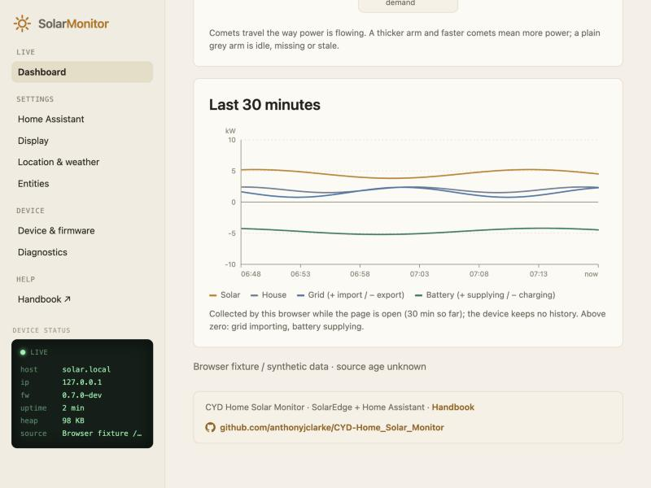
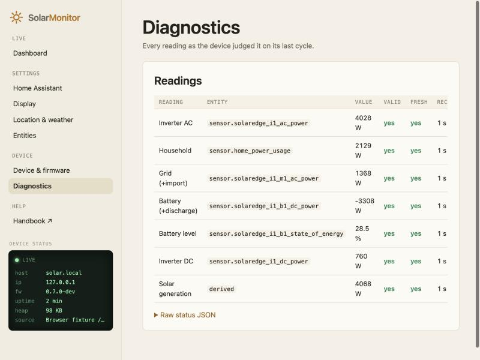
Device & firmware shows the firmware version, address, local time, uptime and free memory, and has Restart device and Reset Wi-Fi (clears Wi-Fi only; Home Assistant settings stay). Firmware update takes the app firmware.bin only; the device pauses Home Assistant reads while uploading and restarts when done.
Settings reference
Settings are split across four sections, but they form one set: Save settings on any section saves them all. If a field elsewhere is invalid, the page switches to that section to show it.
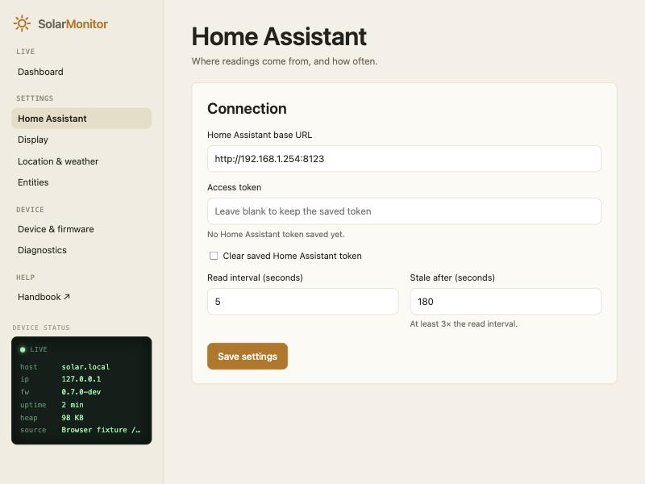
| Setting | Default | Range and notes |
|---|---|---|
| Home Assistant base URL | http://192.168.1.254:8123 | http:// or https://, no path, query or user name. HTTPS needs the CA certificate below. |
| Home Assistant access token | none | Write-only. Blank keeps the saved token. |
| Read interval | 5 s | 2–300 s. Failures back off up to 60 s. |
| Stale after | 180 s | 15–3600 s, and at least 3 × the read interval. |
| Brightness | 180 | 10–255. |
| Demo mode | off | Cycles four synthetic scenes every 20 s; no Home Assistant needed. |
| Dim overnight | on | Uses Night starts / Night ends (hours 0–23). Equal hours disable it. |
| Solar energy today | blank | Optional sensor. in kWh/Wh/MWh, read every 60 s, shown while received within 10 min. |
| Solar forecast tomorrow | blank | Optional sensor. in kWh; same timing. |
| Panel layout | Centre flow (light) | Or Cards (dark). Applies immediately. |
| Battery label | LG 9.8 kWh | Up to 14 characters; shown on the cards layout and in the browser. |
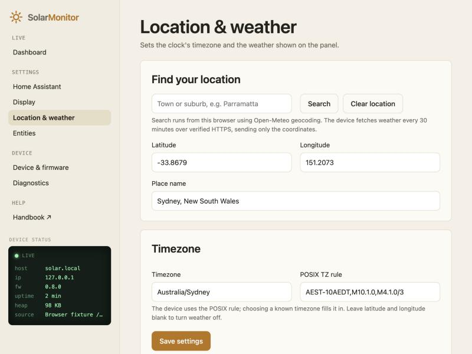
| Setting | Notes |
|---|---|
| Find a town or suburb | Searches Open-Meteo geocoding from your browser and lists matches. Choosing one fills the fields below. |
| Latitude / Longitude | Both blank turns weather off. Only these coordinates are sent to Open-Meteo. |
| Place name | Up to 48 characters; shown in the browser and serial log. |
| Timezone | Olson name such as Australia/Sydney; used to fill the POSIX rule. |
| POSIX TZ rule | What the device actually uses, e.g. AEST-10AEDT,M10.1.0,M4.1.0/3. About 40 common zones fill automatically; for others, type the rule. Applies on save. |
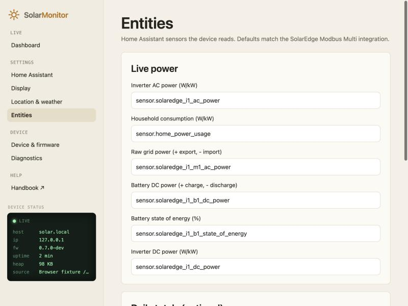
Entity IDs must be sensor. followed by lower-case letters, digits and underscores. The CA certificate is only needed for an https:// Home Assistant URL; paste the PEM certificate of the authority that signed Home Assistant's certificate. Certificate checks are never skipped.
How readings are judged
Signs and solar
Internally, grid is positive for import and battery is positive for discharge; the Home Assistant sources use the opposite signs and are converted on read. Solar is max(inverter DC − battery discharge, 0) (a charging battery counts as negative discharge, so its power is added back), the single-inverter, single-battery formula documented by SolarEdge Modbus Multi. Inverter AC is never used for solar, and battery DC is never added to the AC household balance.
Freshness
- A reading must have been received within Stale after seconds.
- Upstream age uses Home Assistant's
last_reported, judged for the integration as a whole: a reading is fresh while the newest report among all six sources is recent. Home Assistant doesn't refreshlast_reportedfor every unchanged value. For example, an idle, full battery can keep a ten-minute-old report time while the inverter keeps reporting, and that is still a current reading. - Values reported as
unknownorunavailable, non-numeric values, or wrong units are rejected immediately. - Solar needs fresh DC and battery readings received within
max(10 s, 2 × read interval)of each other. - Daily totals are shown while received within 10 minutes; weather while under 3 hours old.
Serial diagnostics
At 115200 baud the firmware logs timestamped, tagged lines. Tokens, Wi-Fi passwords, the device code, certificates and response bodies are never printed.
| Tag | Content |
|---|---|
[BOOT] [BOARD] | Firmware, reset reason, heap, board. |
[CFG] [MAP] [SIGNS] | Active settings and entity mapping (URL origin only). |
[WIFI] [CLOCK] [MDNS] | Connection, NTP/timezone, and the solar.local announcement. |
[POLL] | One per cycle: duration, valid count, heartbeat_age (age of the newest upstream report). |
[READ] | One per entity: HTTP status, time, raw and normalised value, and a reason (below). |
[SOLAR] [BALANCE] | Solar inputs and validity; AC + grid versus household cross-check. |
[TOTAL] [WEATHER] | Daily total / forecast reads; weather fetches and location. |
[SOURCE] [DATA] [HEALTH] | Status message, validity bit-mask changes, and heap/RSSI every 30 s. |
| Read reason | Meaning |
|---|---|
fresh | Current. |
fresh-unchanged | Value unchanged for a while but the integration is still reporting: current. |
source-age-unknown | No report time or no clock yet; shown, but age can't be verified. |
receive-stale | Not received recently (network or Home Assistant problem). |
report-stale | The whole integration hasn't reported recently. |
report-in-future | Report time is more than a minute ahead of the device clock. |
invalid | Rejected value; see the error= field. |
Troubleshooting
| Symptom | Check |
|---|---|
http=401 on every read | Token wrong or revoked: paste a new one. |
http=404 on one read | Entity ID wrong: compare with Home Assistant's Developer tools → States. |
error=invalid-state-or-unit | Entity is unavailable, or reports an unexpected unit (power must be W/kW, battery level %, totals kWh/Wh/MWh). |
| Negative HTTP code | No connection to Home Assistant: check the URL, port and that Home Assistant is running. |
Solar shows -- or grey | Read the [SOLAR] reason=: DC or battery invalid, stale, or received too far apart. |
solar.local doesn't open | The client may not support mDNS; tap the panel and use the IP address. |
[WEATHER] error=http-or-transport | No internet, or the TLS check failed; it retries every five minutes. |
| Clock wrong by hours | Check the POSIX TZ rule in the location settings. |
| Taps land in the wrong place | Recalibrate: tap to open setup, hold for two seconds. |
Security and privacy
- Changes require an
X-CYD-Requestheader that browsers won't send from other websites without permission, so a malicious web page can't reconfigure the device through your browser. - The Home Assistant token is stored on the device, is never returned to the browser and is never logged.
- ArduinoOTA and the Wi-Fi setup hotspot still use the device code as their password.
- Weather requests send only latitude and longitude to Open-Meteo over HTTPS verified against ISRG Root X1 (valid to 2035). Place search runs in your browser, not on the device.
Appendix: links and acknowledgements
This project stands on other people's work. Thank you to everyone below.
Energy system and Home Assistant
| Project | Used for |
|---|---|
| SolarEdge Modbus Multi by WillCodeForCats | The Home Assistant integration that reads the inverter, battery and meter over Modbus TCP. Its template-sensor wiki is the source of the solar and house formulas. |
| Home Assistant | The hub the panel reads, through its REST API. |
| HACS | Installs SolarEdge Modbus Multi and Solcast. |
| SolarEdge SetApp | Turning on Modbus TCP in the inverter. |
| Forecast.Solar and Solcast for Home Assistant | Optional solar forecast for tomorrow. |
| Open-Meteo | Weather and place search. Weather data by Open-Meteo.com, licensed CC BY 4.0. |
Hardware and firmware
| Project | Used for |
|---|---|
| ESP32 Cheap Yellow Display by Brian Lough and the community | Board documentation, pinouts and buying guide for the ESP32-2432S028R. |
| Arduino core for ESP32 and PlatformIO | Framework and build system. |
| TFT_eSPI by Bodmer | Display driver and fonts. |
| XPT2046_Touchscreen by Paul Stoffregen | Touch controller. |
| WiFiManager by tzapu | Wi-Fi setup hotspot and captive portal. |
| ArduinoJson by Benoît Blanchon | Parsing Home Assistant and weather responses, and stored settings. |
| Improv-WiFi-Library by jnthas, and the Improv Wi-Fi standard | Wi-Fi setup over USB from the installer (vendored copy with a fix). |
| ESP Web Tools by ESPHome | The browser installer. |
| Let's Encrypt ISRG Root X1 | Verifying the HTTPS connection to Open-Meteo. |
This project
- Source, issues and releases: github.com/anthonyjclarke/CYD-Home_Solar_Monitor
- Browser installer: anthonyjclarke.github.io/CYD-Home_Solar_Monitor, and other projects on the ESP32 Web Installers hub
- Release tooling: cyd-web-installer
- MIT licensed. SolarEdge, LG and Home Assistant are trademarks of their owners; this project isn't affiliated with or endorsed by them.